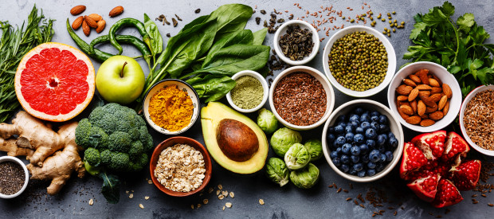

Practical tips for a healthy and sustainable diet
1.Eat more fruits and vegetables
2.Eat locally, when in season
3.Avoid eating more than needed, especially treats
4.Swap animal protein for plant-based ones
5.Choose whole grains
6.Choose sustainably sources seafood
7.Eat dairy products in moderation
8.Avoid unnecessary packaging
9.Drink tap water
Each of us contributes to the impact that our food system has on the planet. We can all commit to making the world a healthier place to live, through small but achievable changes to our diets.
Eat more fruits and vegetables
Fruit and vegetables are good for our health, and most come with a low environmental impact. There are exceptions, as some require a lot of resources to transport and keep fresh, so eating these less frequently can increase the sustainability of our diets. Examples include:

fruits and vegetables that are fragile, or require refrigeration (salads and berries)
vegetables that are grown in protected conditions (such as hot-house tomatoes or cucumbers)
Foodsthat use a lot of resources during transport (green beans, mange-touts, or berries imported from the southern hemisphere).
Oily,fast-food,alchohole is danger for health
Avoid eating more than needed, especially treats
1.Consuming only what we need reduces demands on our food supply by decreasing excess production.
2.It also helps to keep us healthy and avoid excessive weight gain.
3.Limiting snacking on energy-dense low-nutrient foods and paying attention to portion sizes are all useful ways to avoid unnecessary overconsumption.
For getting more updates about health tips click here
contact me in facebook
Exercise is the base of healthy life ..Healthy food Exercise =Helathy life
health is power .. life health
Eat dairy products in moderation
While milk and dairy production has an important environmental impact, dairy products are an important source of protein, calcium and essential amino acids, and have been linked to reduced risk of several chronic diseases, including metabolic syndrome, high blood pressure, stroke, bowel cancer and type 2 diabetes.

Enjoy low-fat unsweetened dairy products daily, but in moderation.
Limit consumption of high-fat cheeses to occasional.
For those of us who choose to eliminate dairy completely, opt for plant-based drinks that are fortified with vitamins and minerals, like calcium.
Drink tap water
In Europe, the standards of water quality and safety are high. Instead of buying bottled water, we can re-fill a reusable water bottle at the tap as many times as we want. Tap water costs a fraction of the price of bottled water and reduces our ecological footprint.

Water is life
Water saves life
dedicated to:
.qlɘʜ ɘʜɈ ɿoʇ ɿoɈɔυɿɈƨni ɘldɒɿonoʜ γm oɈ ƨʞnɒʜɈ ɘviϱ oɈ ɘʞil blυow I. ʞɿow ƨiʜɈ ob oɈ ɘvol I
For going to mirror effect on text site Copy the text from here and paste it on the site